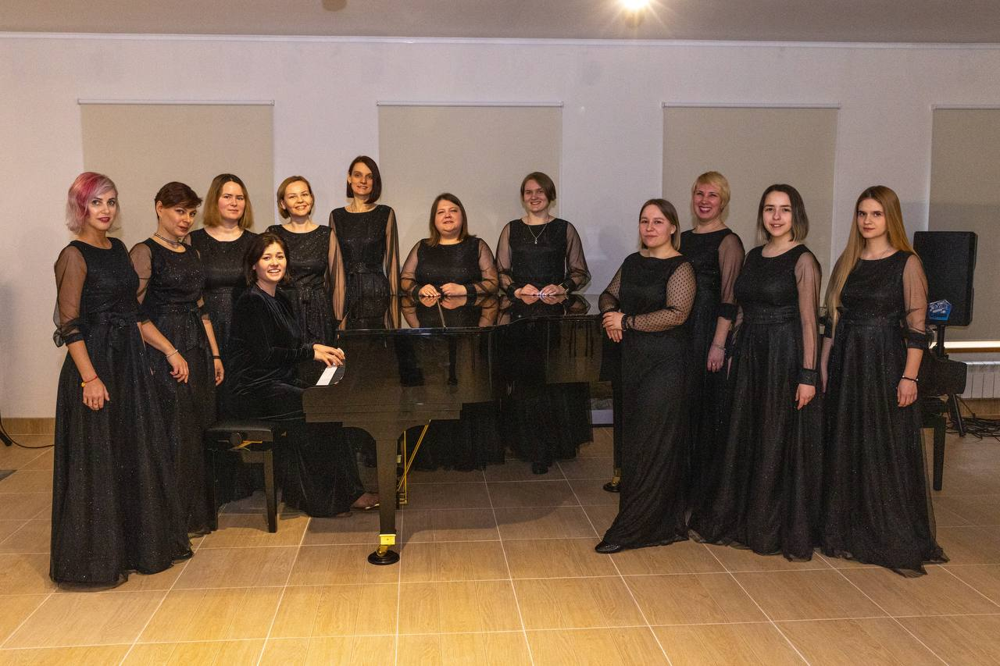
Концерты
Выступаем на лучших концертных площадках Москвы — от камерных залов до «Лужников».
Женский хор · Москва
Хор LARUS — концертирующий любительский коллектив под руководством Кристины Романовой. Мы поём классику и современную музыку, выступаем в лучших залах Москвы и уже открыли сезон 2026–2027 концертом в «Лужниках».
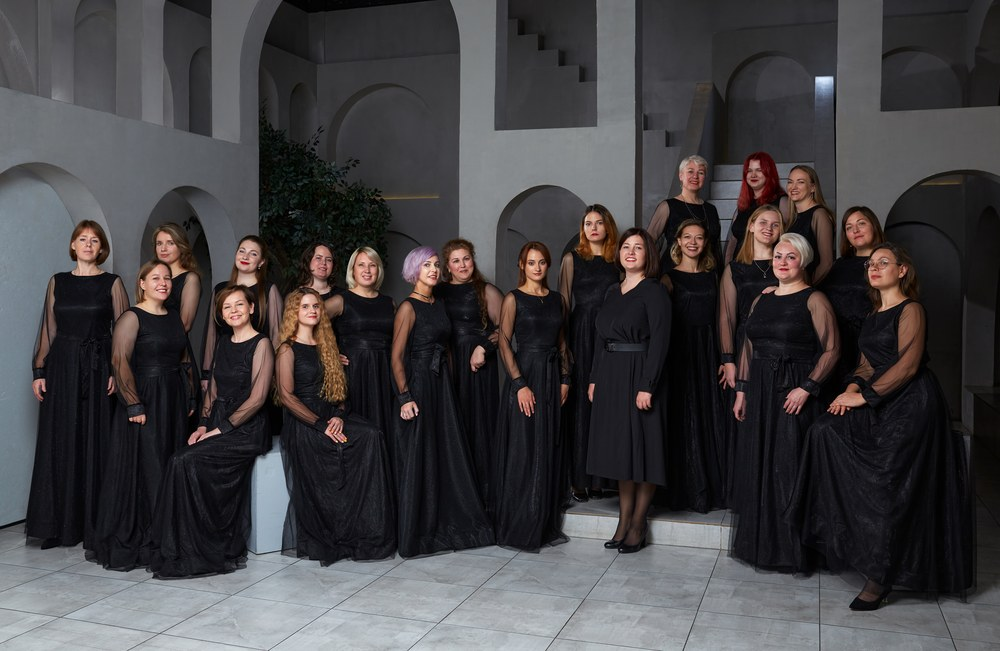
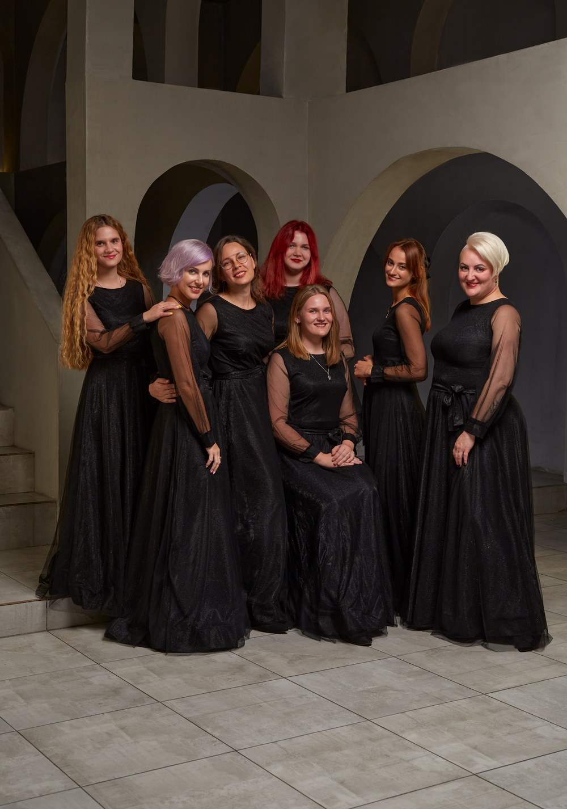
01 · Наша команда
Кристина — маэстро креатива и авторского подхода. Она основала LARUS в 2021 году и с тех пор вдохнула новую жизнь в классические произведения: смелые эксперименты — от Stabat Mater до музыки Silent Hill — делают каждое выступление хора событием.
А ещё мы много путешествуем: гастроли, фестивали, конкурсы по всей России и за её пределами. С LARUS вы не только будете петь, но и увидите мир.
Присоединяйтесь — и откройте для себя мир музыки, творчества и незабываемых приключений. Первый шаг прост: одна пробная репетиция.
основатель · дирижёр
«Маэстро креатива»: генератор музыкальных идей, неординарный взгляд на хоровое искусство и смелые эксперименты. Верит в раскрытие потенциала каждого участника.
концертный директор
«Гуру организации и путешествий». Пока Кристина живёт музыкой, Ирина делает так, чтобы концерты случились: залы, договоры, афиши, логистика гастролей и десятки незаметных мелочей — чтобы на сцене была только музыка.
02 · Коллектив
LARUS — не просто хор, а сообщество людей, объединённых любовью к музыке и пению. Коллектив основан в 2021 году и с каждым сезоном растёт: здесь три направления — под любой уровень и любые цели, от первых шагов в пении до большого концертного состава.
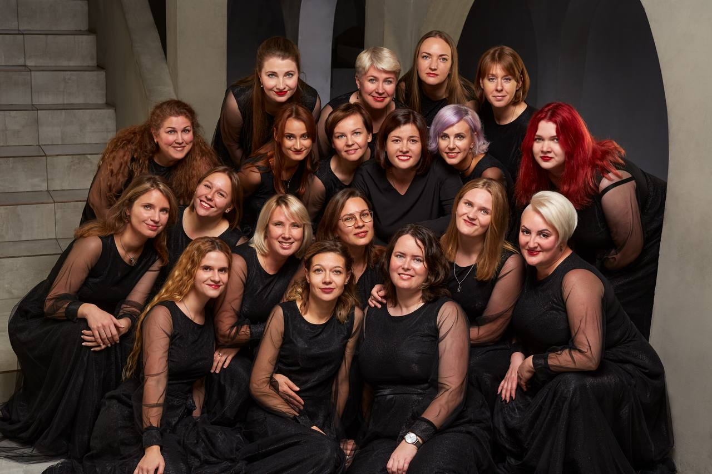
Для тех, кто уверенно поёт в ансамбле: регулярные репетиции, сложный репертуар и концерты.
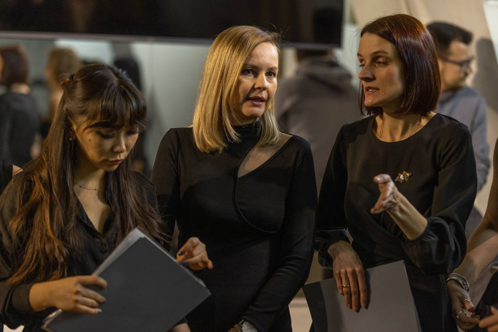
Компактный формат: глубокая проработка партий, разные стили, больше внимания каждому голосу.
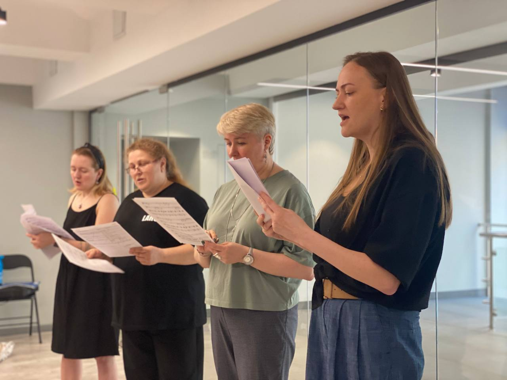
Если давно хотелось петь, но боялись начать: основы строя и интонации, простые партии, поддержка коллектива.
03 · Почему LARUS

Выступаем на лучших концертных площадках Москвы — от камерных залов до «Лужников».
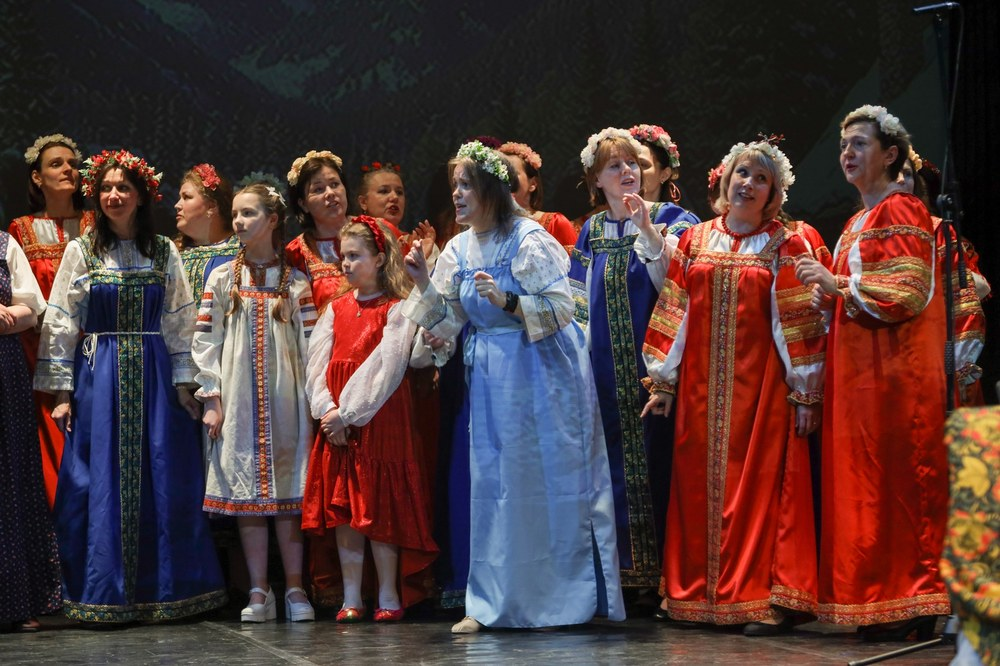
Поездки по стране, участие в конкурсах и открытых сценах — недавно привезли «Лауреата I степени» из Казани.
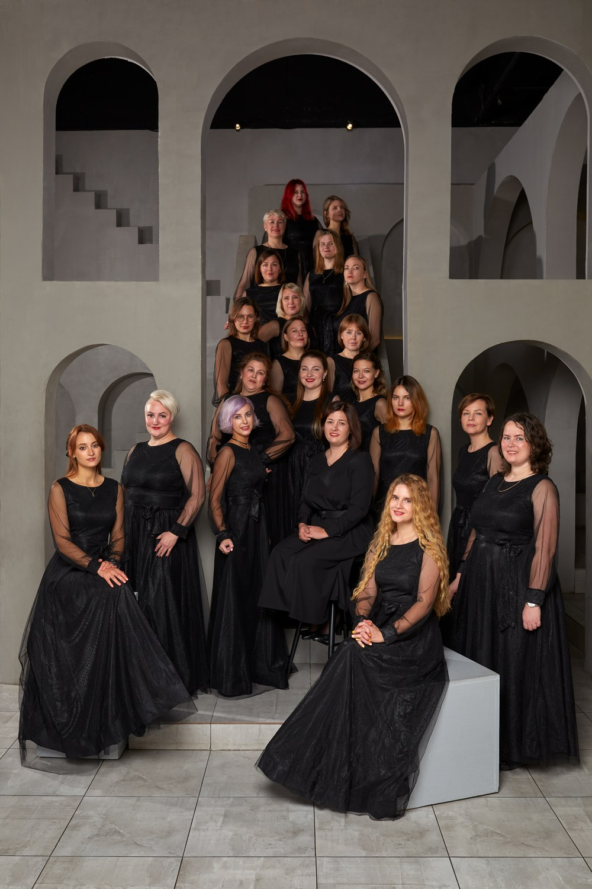
Петь можно без опыта — главное желание. Здесь вас научат и примут: коллектив становится семьёй.
04 · Афиша и новости
Центральный Дом актёра · 16 декабря
Музыка Акиры Ямаоки из легендарной серии игр вместе с симфоническим оркестром Mendeleev Filarmonica, рок-бендом и солистами — Марией Лагерфельд, Владой Баязитовой, Анной Поздеевой и Евгенией Алексеенко.
Дирижёр и аранжировки — Евгений Рубцов · ведущий — Игорь Рубцов
Стадион «Лужники» · уже выступили
Гастроли в другие города, залы с исключительной акустикой и большие проекты с солистами и оркестром — впереди насыщенный год. Следите за анонсами в телеграме.
Как это было
05 · Набор открыт
Мы не ждём, что вы придёте «уже готовым». Заполните короткую анкету — мы подскажем, какое направление подойдёт именно вам, и пригласим на пробную репетицию. Без обязательств и стресса.
06 · Галерея
Концерты, гастроли и жизнь хора — кадры из нашего телеграм-канала.
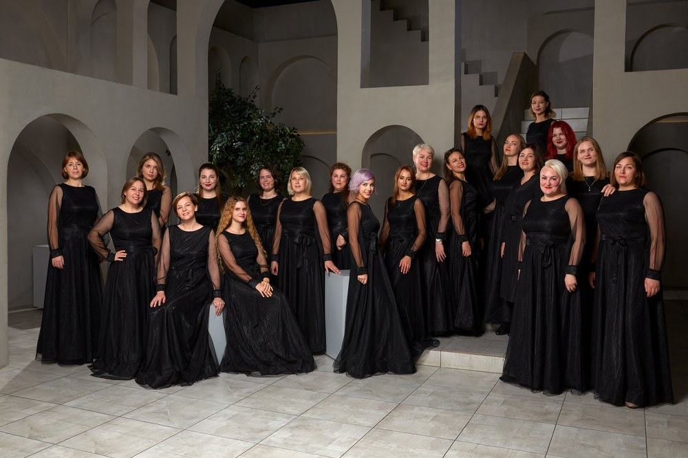
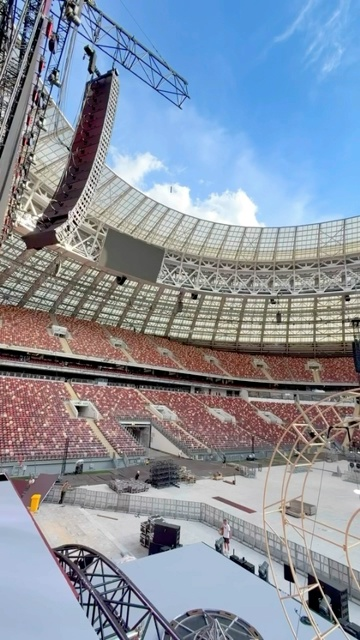
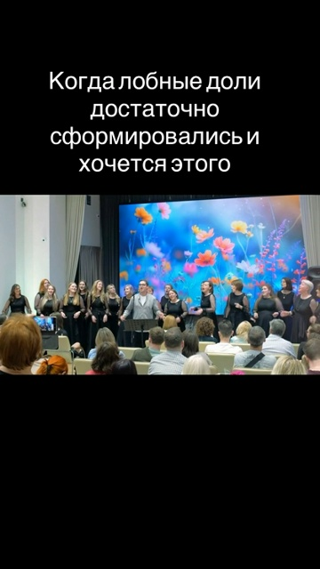
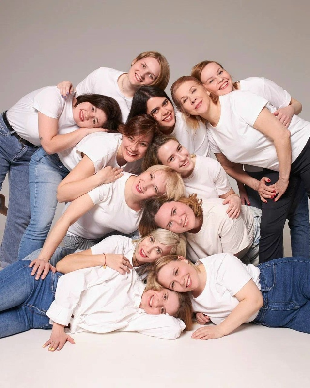

«Хор — это многоХочу петь с вами
счастливых людей сразу!»
07 · Контакты